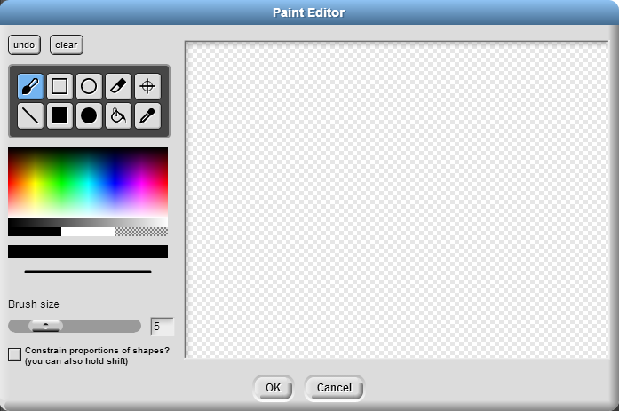

2. Costumes
If you just click the arrow button to add a sprite, the added sprite’s costume will be predetermined -- in all default cases, the sprite’s costume is called “turtle” and is essentially an arrow. If you click on the paintbrush button next to it, you will be able to design your sprite’s costume! A window will pop open and you can use the basic drawing tools there.

You can click on the costume tab found on top of the scripting area to see the costumes you have made for your sprite. If you want to switch between costumes, you will have to use the . In the ‘s drop-down menu, select the name of the costume you want the sprite to have. You will need to integrate this block as part of the sprite’s script in the scripting area if you want a costume change to happen.